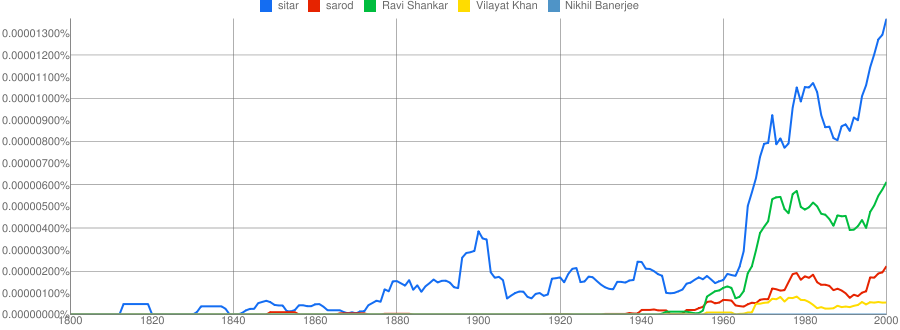

Google n-grams and Ravi Shankar

Here is a bit of musicology using Google N-grams. The graph shows the occurrence of the terms sitar and sarod in the N-gram collection in the last two centuries. First, this goes to show that the sitar has always been by far the more popular instrument and, even at present, is probably at least twice as popular as the sarod. Second, there is jump in the sitar frequency in the mid 1960s. This jump correlates rather well with a similar jump in Ravi Shankar around the same time. Two other well-known sitarists’ names are not so correlated. The tentative conclusion ? Ravi Shankar may have been responsible for the rise in popularity of the sitar in the West. Yes, we know that for a fact, but this is a good example of the kind of use N-grams might could be put to in musicology. Of course, the leap from correlation to causation is fraught with danger, but there are now well-defined ways to infer causation. With careful use, I am sure Google N-grams is going to throw up more interesting insights into human activity.